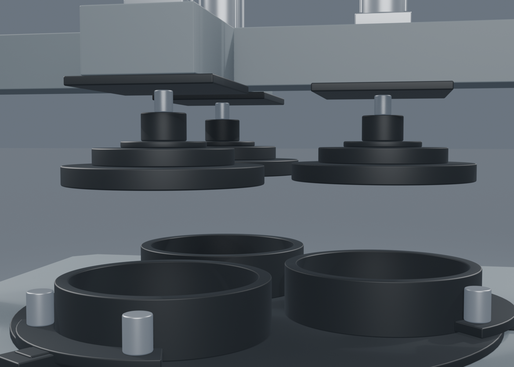
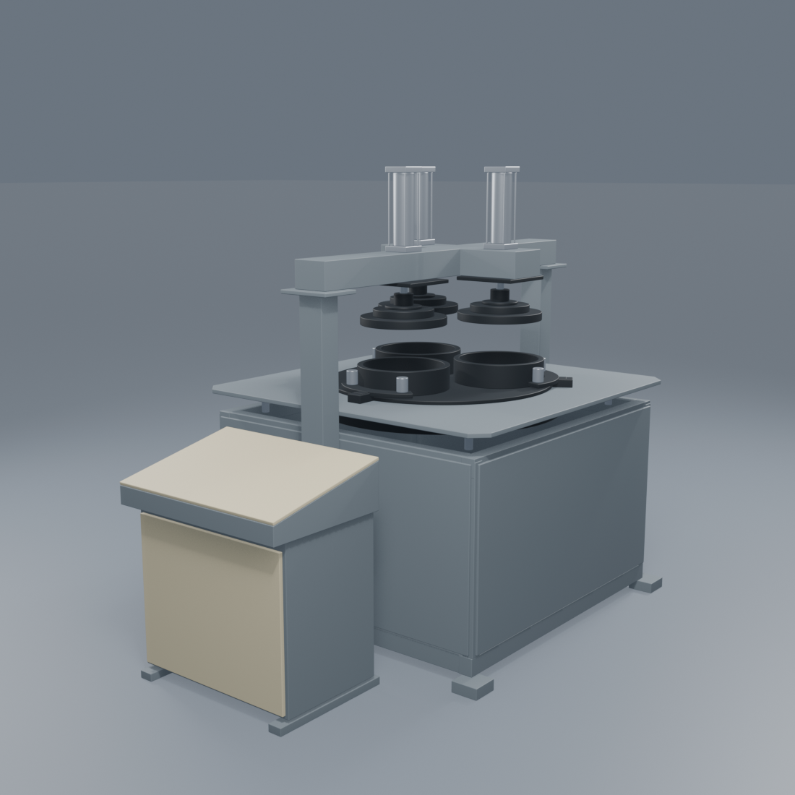
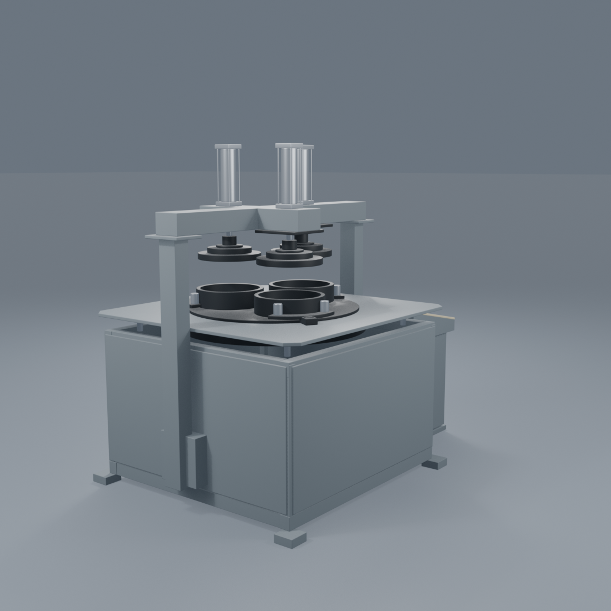
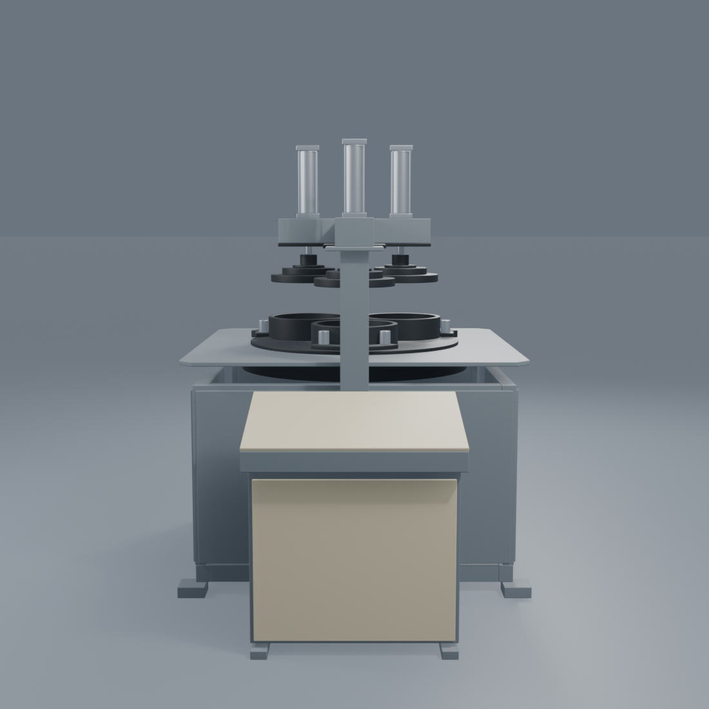
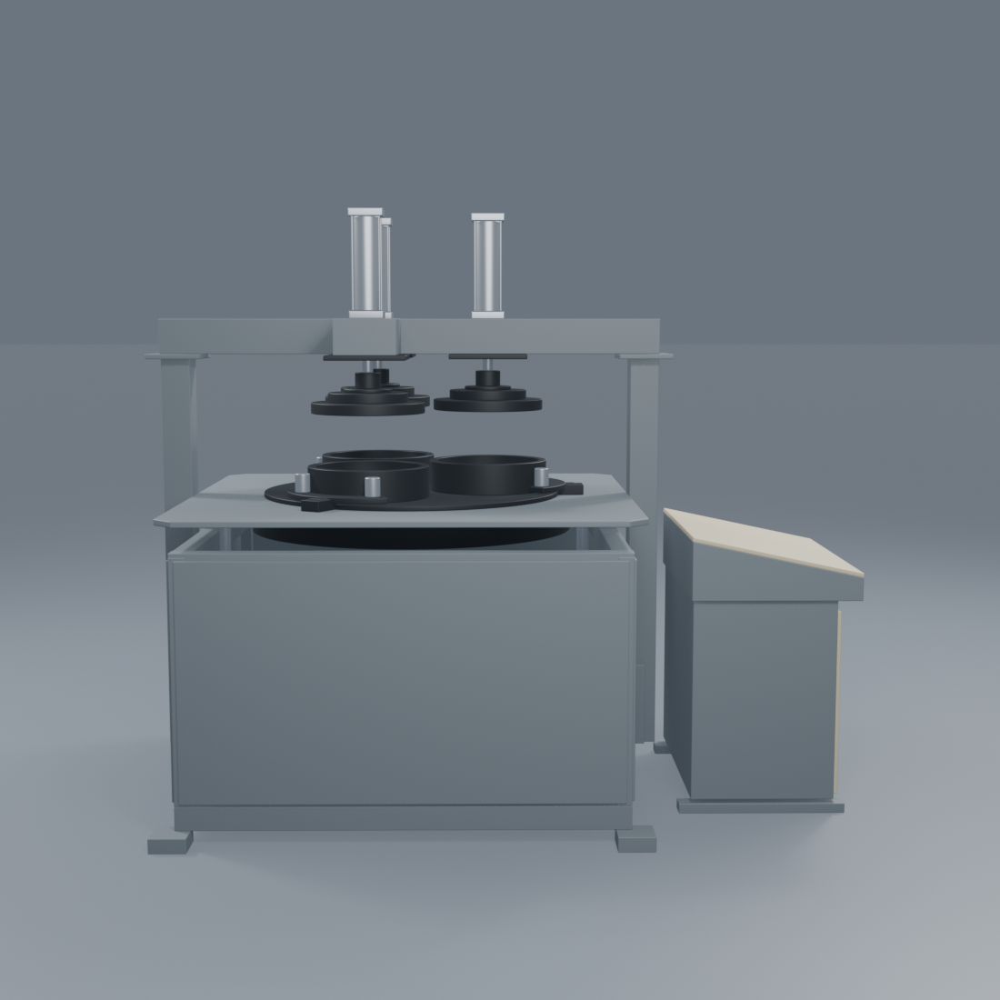
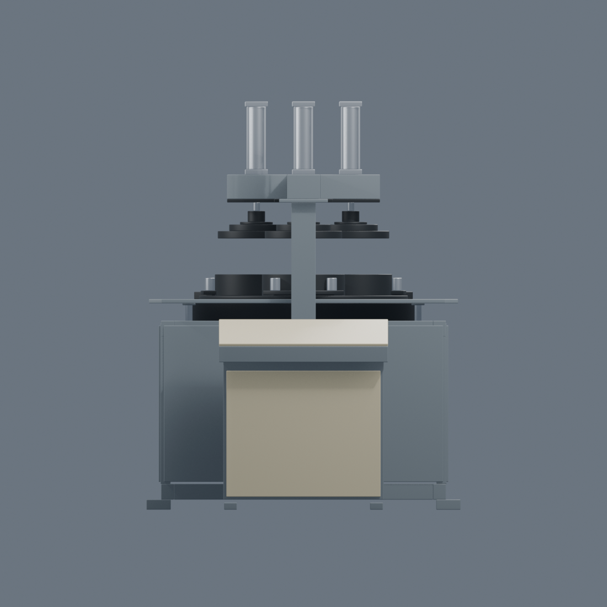
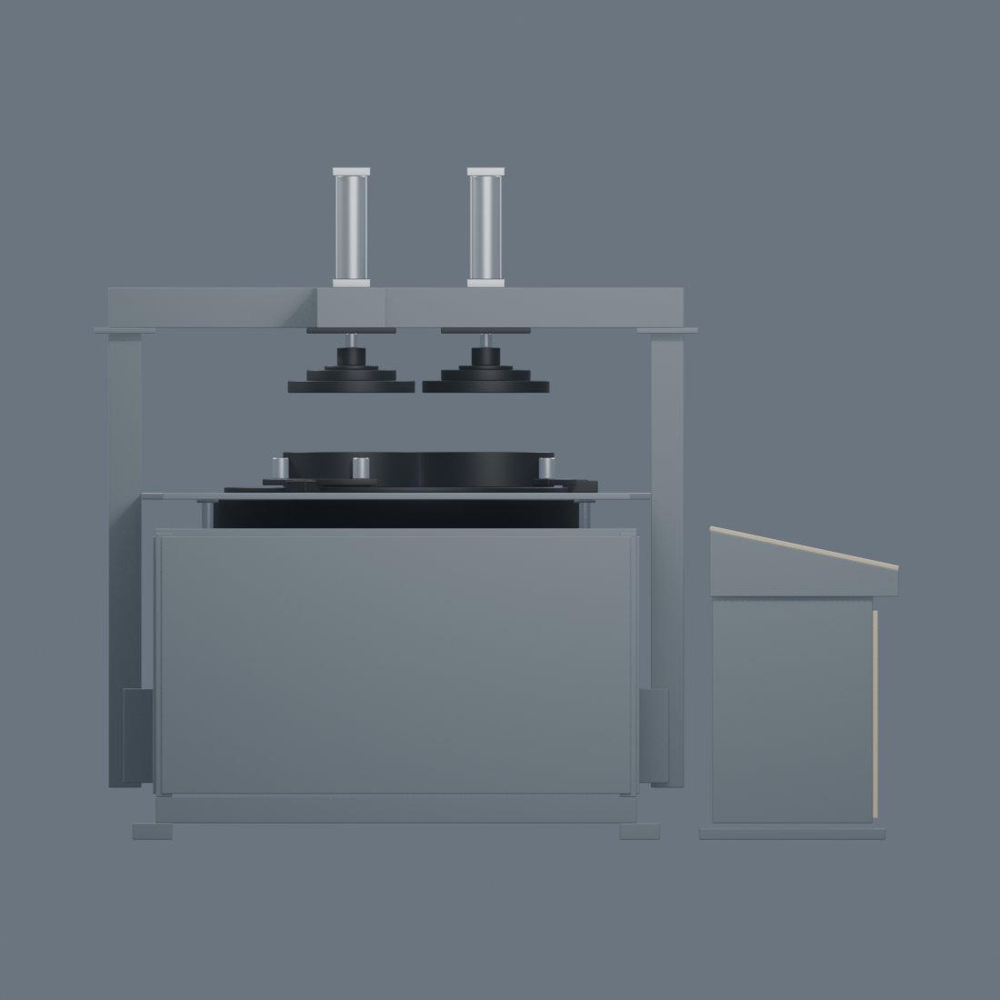
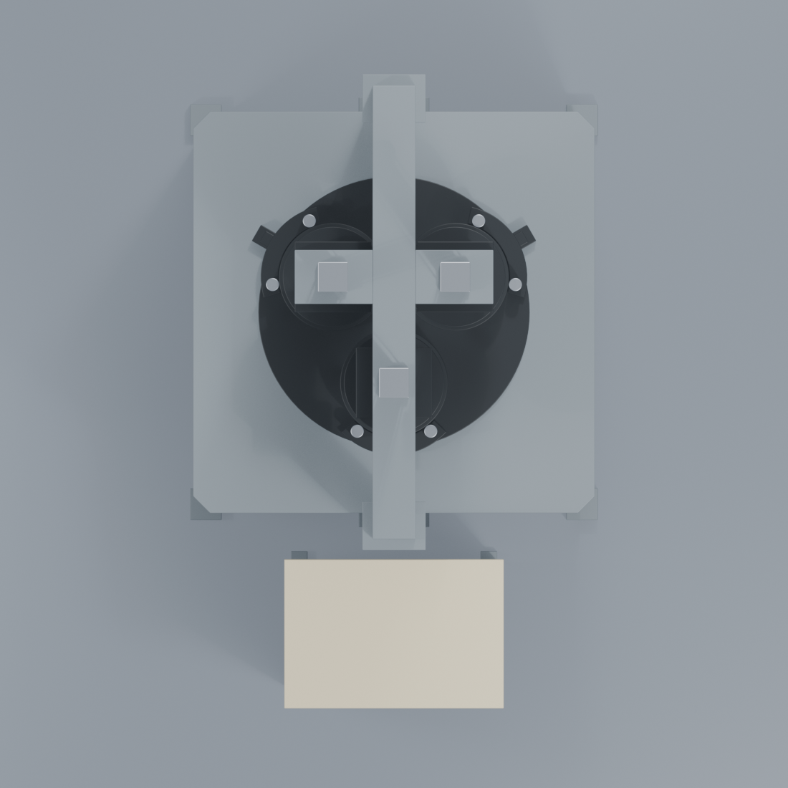

Lapping machine v02 comparisonLapping machine · blockout v02
Front −Y · rear +Y · Z up · cabinet width provisionally 1 m. Larger head clearance, shallower console enclosure and broader station mounts. All dimensions remain estimates; concealed beam connections remain provisional.
These are uncalibrated camera comparisons, not pixel-aligned overlays. Use the orthographic checks below to distinguish geometry from perspective.
Dimension changes and verification report · Blender model · Complete scriptWorking assembly close-up
 Reference 16.jpeg
Reference 16.jpeg
v02 · perspective approximationFront three-quarter
 Reference 10.jpeg
Reference 10.jpeg
v02 · perspective approximationRear three-quarter
 Reference 6.jpeg
Reference 6.jpeg
v02 · perspective approximationConsole-facing perspective
 Reference 11.jpeg
Reference 11.jpeg
v02 · perspective approximationSide perspective
 Reference 5.jpeg
Reference 5.jpeg
v02 · perspective approximationOrthographic geometry checks

Front
Side
Top — console toward bottom